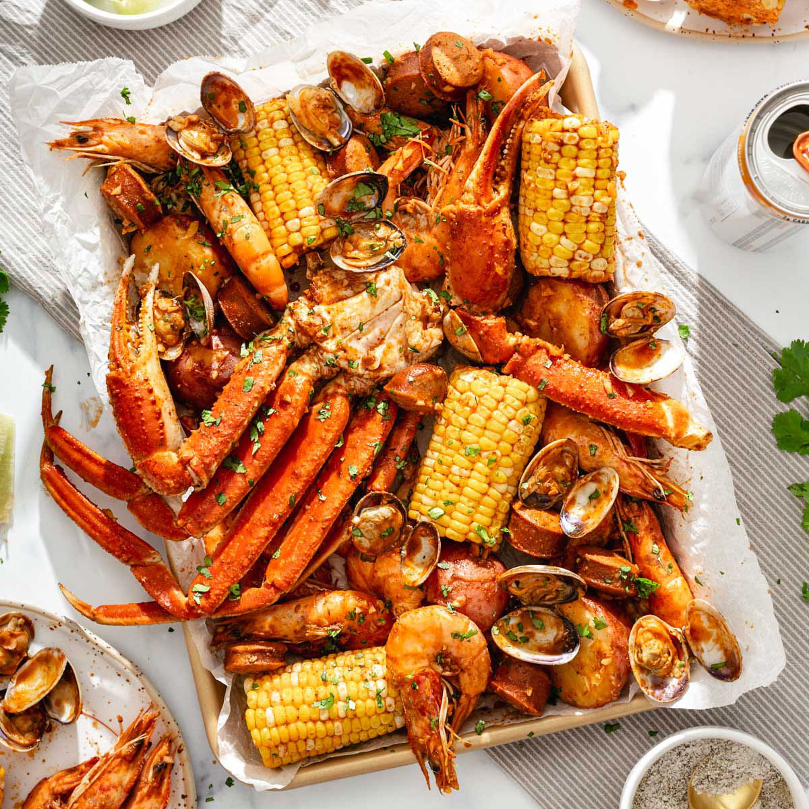

Crab Boil Recipe

Crab Boil Recipe
This is a recipe to make a delicious crab boil, complete with all you favortie seafoods (i.e. crab, shrimp, clams,etc.) as well as amazing sausage, corn, and potatoes. It has the perfect amount of spice and seasoning and is a perfect way to end a great day at the beach. ENJOY!
Ingredients
Seasoning blend
- 1 cup Old Bay Seasoning
- 1/2 cup smoked paprika
- 6 tablespoons cajun seasoning
- 4 tablespoons onion powder
- 4 tablespoons garlic powder
- 3 tablespoons cayenne
- 3 tablespoons red pepper flakes
- 3 tablespoons dried thyme
- 3 tablespoons coarse ground black pepper
- 2 tablespoons ground mustard
- 2 tablespoons celery seed
- 1 tablespoon ground coriander
Seafood boil
- 20 quarts water
- 6.5 tablespoons kosher salt
- 12 cloves garlic, smashed
- 3 medium onions
- 3 whole lemons, quartered
- 1/4 cup Louisiana hot sauce
- 6 whole bay leaves
- 3 pounds red potatoes
- 3 pounds whole shrimp
- 3 pounds mussels
- 2 pounds snow crab clusers
- 2 pounds andouille sausage
- 6 ears sweet corn, halved
Cajun garlic butter sauce
- 4 sticks unsalted butter
- 10 cloves garlic, minced
- 1 medium lemon, juice and zest
- 1 teaspoon kosher salt (to taste)
- water from the boil to thin the sauce
- remaining spice blend from above (to taste)
Instructions
- Bring a large stock pot of water to a boil. If your stock pot isn't big eough, separate it between two smaller ones. This could take an hour or loner, so be sure to start early.
- Add water to a large stock pot (or separate between 2 stock pots). Bring to a boil and then add 6.5 tablespoons salt, bay leaves, onions, hot sauce, smashed garlic, lemon slices, and 2 and 3/4 cups of the seasoning mix (most of it, reserve the rest fo the garlic butter sauce).
- Add potatoes to the pot and boil for about 12 minutes. The potatoes should be mostly tender, but not entirely cooked through as they will finish cooking as other ingredients are added.
- Add the seafood and sausage to the pot, cover, and gently boil for about 10 minutes. After 10 minutes, add in the corn, and gently boil it for 5 mintues.
- Meanwhile, add the butter to a large saucepan to melt. Once melted, add in the garlic and cook over low heat to infuse the flavor, stirring often. Add the remaining spice blend slowly and to taste. Stir to combine, then add lemon zest and lemon juice. Add 2-3 cups of the liquid form the seafood boil to thin. Adjust seasonings to taste
- Remove ingredients from the pot and put on a newspaper-line large baking sheet. Drizzle with some of the cajun garlic sauce, garnish with parsley, and lemon wedges, and enjoy! Make sure to servie it with the remaining sauce on the side. This also tastes great with a cold beer and hot sauce too!